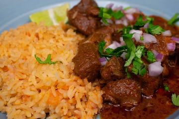

Fajitas para fiestas en Los Angeles area
Comida para Fiestas en Los Angeles CA

Food Catering in Los Angeles CA
Our Menu

SEE ALL

Tacos para fiestas en Los Angeles, CA

Banquetes de Comida para Fiestas en Los Angeles

Welcome To Anahis Catering
Comida para Fiestas en Los Angeles CA
Our Menu

Food Catering Service in Los Angeles. Comida para fiestas en Los Angeles. Tenemos paquetes para 100, 200 y 300 personas. Llame para un estimado por telefono. Los platos vienen acompañados con arroz, frijoles, salsa verdes, limones, cilantro y cebolla. Para su coveniencia subrimos todo el condado de Los Angeles. Cotizaciones por telefono. Llame hoy y reserve su la fecha de su evento. Comida para Bodas, Comida para Fiestas, Banquete para fiestas en Los Angeles, Banquete de comida para fiestas en LA, Comida para XV Años, Comida para cumple años etc.
La comida mexicana es una de las más variadas e influyentes del mundo. La cocina mexicana ha evolucionado a lo largo de los siglos para crear una gran variedad de platillos únicos y sabrosos. La comida mexicana también es conocida por su uso de carne, especialmente carne de res y pollo. Estas carnes son a menudo cocidas a la parrilla o en guisos y son una parte importante de platillos como tacos, burritos y tamales. En cuanto a los platillos tradicionales, el taco es probablemente uno de los más conocidos y populares. Los tacos son simples de hacer y se pueden rellenar con una gran variedad de ingredientes, como carne, pollo, pescado, vegetales y más. Otro platillo tradicional muy popular es el burrito, que es similar al taco pero con una tortilla de harina en lugar de una tortilla de maíz. El burrito es a menudo relleno con carne, arroz, frijoles, guacamole y queso. Fajitas para fiestas en Los Angeles y Tacos para fiestas en Los Angeles area. Taquizas para fiestas en Los Angeles y ciudades cercanas.
Las bodas y XV años son eventos muy importantes en la vida de cualquier persona, y la elección de la comida que se servirá durante estos eventos es crucial. En los últimos años, se ha vuelto cada vez más popular servir tacos y fajitas en estas ocasiones, ya que son una opción deliciosa y divertida para los invitados. Comida para fiestas en Los Angeles, CA. Los tacos y las fajitas son platos tradicionales mexicanos que se han popularizado en todo el mundo gracias a su sabor y versatilidad. Los tacos consisten en una tortilla de maíz o trigo rellena de carne, pollo, pescado, verduras y salsas, mientras que las fajitas son tiras de carne o pollo marinadas y asadas a la parrilla, servidas en una tortilla de harina junto con verduras, queso y salsas. Banquete de comida para fiestas en Los Angeles, California y mas. Una de las ventajas de servir tacos y fajitas en una boda o XV años es que son muy versátiles. Los invitados pueden personalizar su comida según sus gustos, eligiendo entre una variedad de opciones de carne, verduras y salsas. Esto hace que la comida sea mucho más emocionante y divertida para los invitados, y también permite a los organizadores del evento satisfacer una amplia variedad de preferencias alimentarias, como vegetarianos y veganos. Además, los tacos y las fajitas son una opción más informal y relajada que otros platos tradicionales de banquetes, lo que puede ser perfecto para una boda o XV años con un ambiente más casual. Los invitados pueden comer mientras se mueven y socializan, lo que crea un ambiente más festivo y relajado. Food catering in Los Angeles, CA area. Para asegurarse de que la comida de tacos y fajitas sea un éxito en un evento de boda o XV años, es importante contratar un servicio de catering especializado en este tipo de comida. Estos servicios pueden proporcionar todo lo necesario para preparar y servir los tacos y fajitas, incluyendo la carne, verduras, salsas y tortillas frescas. Banquete para fiestas en LA. En resumen, los tacos y las fajitas son una opción deliciosa, versátil y emocionante para la comida de una boda o XV años. Al ser una opción más casual y relajada, también pueden ayudar a crear un ambiente más festivo y divertido en el evento. Si está buscando una forma de darle un toque único y emocionante a su próxima boda o XV años, considere servir tacos y fajitas como la opción de comida principal. Food catering service in Los Angeles area.


Give us a call — we're happy to answer any questions.
Call Now · (562) 380-3540